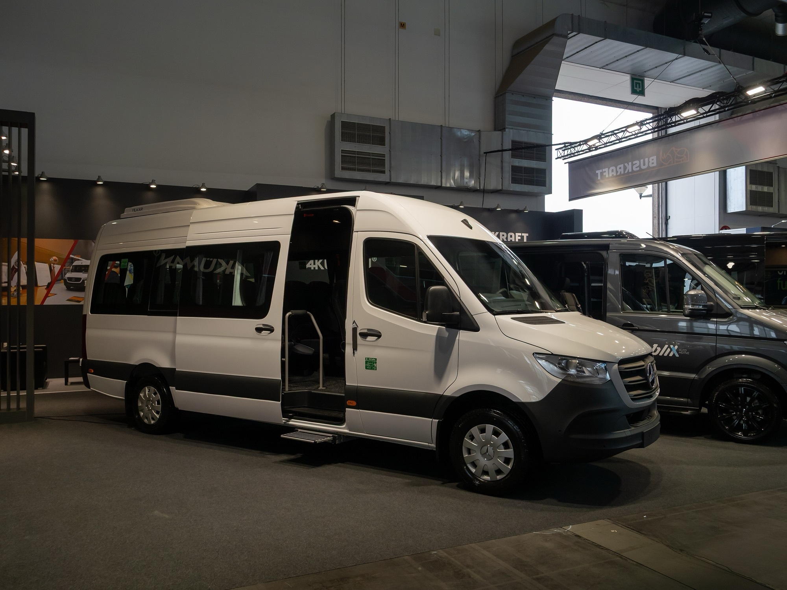
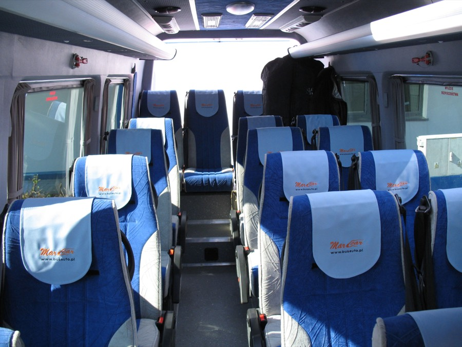

20+1
Mercedes-Benz Sprinter
Microbuzul pentru grupuri mari: circuite de mai multe zile, nunți, echipe sportive, deplasări de firmă. Toată lumea în aceeași mașină, cu bagajele în compartimentul din spate.
- Locuri
- până la 20 de pasageri + șofer
- Bagaje
- compartiment separat, în spate
- Climă
- aer condiționat
- Bun pentru
- circuite, evenimente, echipe
